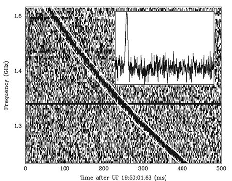

Fast Radio Bursts
Fast Radio Bursts (FRBs) are a new type of radio transients, yet, with unknown origins. The bursts last for a few milliseconds, and show dispersive signatures with prominent flux densities. As a new class of astronomic transients, has fascinated a lot of astrophysicists’ attentions during this decade. The first FRB (Lorimer Burst) was discovered serendipitously in Parkes Pulsar Survey.

Later on, following high time-resolution surveys yield a growing number of detections. With the repeating finding, the FRB host galaxy was identified at cosmological distance firstly. Since that, theoretical models start to evolve from cataclysmic ones to repeatable events. However, the origin(s) of FRBs is still a mystery at present. New facilities with large field of view and good sensitivity are commencing FRB surveys, FRB science is entering epoch of large sample. We are optimisitc that emerging localizations will shed light on the FRB true nature in the near future.
Pulsars
Pulsars are highly magnetized rotating compact stars (neutron stars or white dwarfs, maybe quark stars) that emit beamed electromagnetic radiation. We can observe a pulsar with periodic arrival pulses like lighthouse.
As one of top four discoveries in 1960s, research on pulsars has contributed to two Noble Prize in physics. Theses highly spinning neutron stars provide natural laboratories to explore the equation of states of extremly compact matter. Owing to accuracy of pulse arrivals, millisecond pulsars are widely used in astrophysics. High-precision timing on millisecond pulsars in binaries help physicists to test gravity theories, whether general relativity is still correct in strong gravitational field. More importantly, long-term precise timing for pulsars from different directions is the unique tool to detect nano-hertz gravitational waves from the distant universe, i.e. Pulsar Timing Array (PTA).

RFIs
It’s inevitable for radio astronomers to tackle with a variety of radio frequency interferences (RFIs). Since the electromagnetic environment is becoming worse and worse all round the world, the RFIs excision and mitigation is the future of radio astronomy.

Deep Learning
In recent years, the machine learning applications in astronomy is growing dramatically. For time-domain radio dataset, convolutional neural network (CNN) is playing a more and more important role in data reduction and candidates selection.